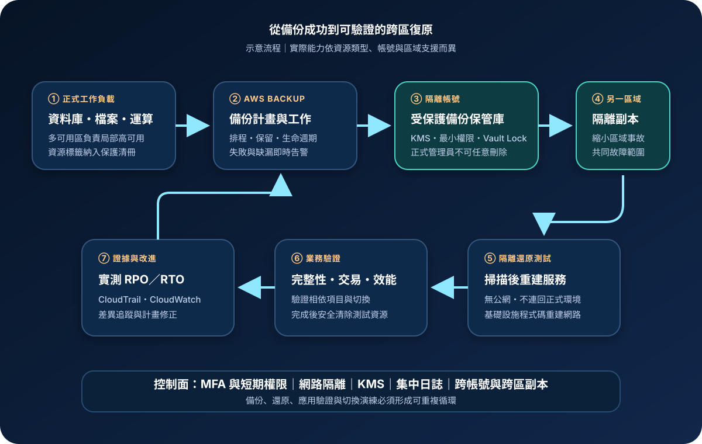

AWS Backup 與災難復原：備份治理、還原測試與跨區韌性
AWS Backup 集中管理支援資源的備份政策、復原點與還原測試；災難復原則是讓業務在重大故障後於目標時間與資料損失範圍內恢復的完整能力。備份是必要控制，但沒有隔離、測試與重建路徑的備份，不等於可用的復原方案。
作者：Dr. William｜查閱與發布：2026-09-12
服務定位
AWS Backup 是集中式資料保護服務，可用備份計畫、資源指派與標籤，為支援的 AWS 服務設定排程、保留、生命週期與複製規則。復原點存放於備份保管庫（backup vault），並可依服務及區域支援情況執行跨帳號、跨區域複製與還原測試。
災難復原（Disaster Recovery, DR） 不是單一 AWS 服務。它結合資料保護、基礎設施重建、身分與網路、應用切換、通訊及演練。設計先由復原點目標（RPO，可接受的資料損失時間）與復原時間目標（RTO，可接受的中斷時間）出發，再選擇備份與還原、Pilot Light、Warm Standby 或多站點等策略。
核心概念與適用邊界
AWS Backup 治理元件
- 備份計畫：定義頻率、備份窗口、保留期限、冷儲存生命週期及複製規則。
- 資源指派：以資源、標籤或條件納入保護；新增資源後仍要驗證是否被規則涵蓋。
- 保管庫：隔離復原點並套用存取政策與 AWS KMS 加密；金鑰權限會直接影響還原。
- Vault Lock：可強制保留控制，降低復原點被提早刪除或縮短保留期的風險。
- 還原測試：依計畫週期性建立測試還原工作，但業務可用性仍須由應用層驗證。
復原策略邊界
- RPO／RTO：必須由業務影響與依賴關係決定，不能只沿用工具預設值。
- 備份與還原：成本較低，但重建及大量資料還原通常耗時較長。
- Pilot Light／Warm Standby：預先保留核心或縮小版環境，以較高持續成本換取較短 RTO。
- 多站點：兩地同時承載流量，復原速度快，但資料一致性、路由與營運複雜度最高。
- 支援差異：各資源的備份、複製、連續備份與還原能力不同，須逐項查證。
適合與不適合的使用情境
適合
- 組織需要跨多個帳號與服務集中套用備份排程、保留規則、稽核及合規報告。
- 勒索軟體與誤刪風險要求復原點具備獨立權限、不可任意變更的保留控制及跨帳號副本。
- 關鍵系統必須定期證明復原點可以還原，而不是只確認備份工作顯示成功。
- 災難復原目標需要將資料、基礎設施程式碼、網路、身分及切換程序納入同一演練。
不適合或不能單獨完成
- 即時故障切換、服務自動擴展或單一可用區高可用性，不能只靠週期性備份完成。
- AWS Backup 不會自動判斷還原後的資料是否正確、應用是否可登入或交易是否完整。
- 不受 AWS Backup 支援的資源、SaaS 資料及外部相依項目，仍需其他匯出、複寫或重建機制。
- 極短 RPO 與 RTO 的系統若只採備份與還原，復原時間通常無法符合業務要求。
示意故事案例：訂單平台的隔離備份與跨區復原
以下為示意案例，不代表特定組織或正式部署。一家訂單平台將正式資料庫、檔案與運算資源置於 Production 帳號。平台團隊在獨立 Backup 帳號建立限制存取的保管庫，依資料重要性設定每日備份與保留週期，再把核准的復原點複製到另一區域。人員透過聯合登入、MFA 與短期權限操作；自動化工作使用最小權限角色，應用機密由 Secrets Manager 或 Parameter Store 管理。
每月還原測試會在隔離網路建立暫時資源，先執行惡意程式與資料完整性檢查，再驗證訂單查詢、附件讀取與資料時間點。測試環境不能連回正式系統，也不接受公網流量。季度演練則用版本化基礎設施程式碼重建替代區域，驗證 AWS KMS 金鑰、網路、DNS、監控與切換程序；結果與實測 RPO／RTO 送入治理紀錄，未達標項目必須追蹤修正。

建置與運作流程
- 完成業務影響分析：依系統、資料與相依服務定義 RPO、RTO、保留年限、復原順序與責任人。
- 建立資源清冊：確認支援的備份類型、區域、跨帳號或跨區能力，以及未受支援資源的替代方案。
- 設計隔離邊界：將備份管理與副本放入專用帳號，限制人員、網路及刪除權限，避免與正式環境共用故障範圍。
- 配置備份計畫：設定頻率、窗口、保留、生命週期、複製與資源指派；對標籤遺漏和工作失敗建立告警。
- 保護金鑰與保管庫：採客戶管理的 KMS 金鑰時，設計最小權限、職責分離、停用保護及緊急復原程序，再評估 Vault Lock 模式。
- 集中稽核：以 CloudTrail 記錄管理操作，將 AWS Backup 事件、工作狀態與必要指標送入 CloudWatch 告警及集中事件流程。
- 執行隔離還原測試：限制對外連線，檢查映像與資料，完成應用層驗證後銷毀測試資源，保留測試證據。
- 建立替代區域：版本化網路、IAM、運算、資料、監控與 DNS 設定，確保復原路徑不依賴事故區域的單一元件。
- 演練與改進：量測實際 RPO／RTO、資料完整性、切換及回切，將差異轉為有期限的修正工作。
成本、可用性與維運考量
AWS Backup 的費用取決於受保護服務與區域，通常包含備份儲存、還原、跨區資料傳輸、冷儲存與提前刪除等項目。跨帳號本身不代表免除服務費；還原測試也會產生暫時運算、儲存、網路、掃描與資料傳輸成本。保留期限、完整或增量機制、變更率、跨區副本數及測試頻率都應納入成本模型。
備份工作成功不表示所有相依項目都有相同復原點。資料庫、物件、檔案、佇列、網域與外部服務的時間一致性須由應用設計處理。高可用性用來承受局部故障，災難復原用來處理較大故障；多可用區部署不能自動取代跨區復原，跨區副本也不能取代同區高可用性。
較短 RTO 通常需要更多預先配置容量、持續複寫與自動化，成本也較高。採最低成本的備份與還原策略時，必須實測大量資料還原、配額提升、映像取得、金鑰使用、DNS TTL、快取更新與人員決策所需時間。
AWS Backup 與災難復原特有資安風險與控制
- 備份與正式環境同時被破壞：將副本放入獨立帳號與區域，以不同管理路徑、保管庫政策及 Vault Lock 縮小共同故障範圍。
- 過度備份權限：備份角色若可存取過多資源，遭濫用時會擴大資料暴露。分離備份與還原角色，限制資源、條件及可扮演主體。
- 金鑰不可用：KMS 金鑰遭刪除、停用或政策設定錯誤會使復原點無法還原。限制高風險操作、啟用告警，並把金鑰復原納入演練。
- 跨帳號政策誤設：保管庫、KMS 與 Organizations 條件不一致可能阻斷複製或暴露副本。逐項驗證來源帳號、目的帳號、組織與區域範圍。
- 未納管新資源：標籤缺漏或新服務類型可能沒有備份。以 AWS Backup Audit Manager、AWS Config 或清冊差異檢查保護覆蓋率。
- 惡意內容被還原：受感染資料可能隨復原點回到環境。先在無公網、無正式連線的隔離網路掃描，再經資料與應用驗證後釋出。
- 公開存取與外洩：還原後的 S3、資料庫、安全群組或檔案分享可能沿用不當設定。阻擋公開存取，使用私有子網路與端點，並在切換前檢查資源政策。
- 復原機密缺漏：不要把明文機密寫入範本或操作手冊；以 Secrets Manager 或 Parameter Store 管理，並驗證替代區域可安全取得必要值。
- 偵測與證據不足：集中保存 CloudTrail，使用 CloudWatch 監看備份失敗、刪除、Vault Lock、KMS 與還原活動，避免日誌與工作負載共用刪除權限。
- 只測基礎設施：資源可建立不代表業務可恢復。檢查資料時間點、完整性、登入、交易、外部依賴、效能及回切。
共同責任邊界
AWS 負責 AWS Backup 受管服務與底層雲端基礎設施的安全及可用性，並依各服務能力執行備份、複製、保管與還原工作。客戶負責選擇正確資源、排程、保留、目的地、KMS 金鑰、保管庫政策、Vault Lock、帳號與區域，並驗證工作結果。
客戶也必須落實 IAM 最小權限、人員 MFA 與短期憑證、網路隔離與公開存取控制、加密與機密管理、CloudTrail／CloudWatch、資料分類、惡意內容檢查、備份保留、跨區重建及應用層還原驗證。AWS 不會替客戶定義 RPO／RTO、判斷資料正確性或執行業務切換決策。
上線前可執行檢查清單
- □ 每個關鍵系統已有核准的 RPO、RTO、保留期限、復原順序、依賴清單及責任人。
- □ 所有資源均已確認 AWS Backup 支援範圍，未支援項目另有可驗證的保護方案。
- □ 備份與還原角色遵循 IAM 最小權限；人員採聯合登入、MFA、短期權限與職責分離。
- □ 備份副本位於隔離帳號；需要區域災難保護時，另有經驗證的跨區副本。
- □ 保管庫政策、Vault Lock 模式、保留期間及例外程序已在非正式環境測試。
- □ KMS 金鑰政策、停用或刪除告警，以及替代區域的解密與還原路徑均已演練。
- □ 還原網路預設隔離、阻擋公開存取，必要的私有端點與安全群組已有版本化設定。
- □ 應用機密由 Secrets Manager 或 Parameter Store 管理，操作手冊與範本不含明文敏感值。
- □ CloudTrail 集中保存；CloudWatch 已對工作失敗、復原點刪除、金鑰與保管庫變更告警。
- □ 還原測試包含惡意內容掃描、資料完整性、應用交易、效能、外部依賴及測試環境清除。
- □ 跨區 DR 演練已量測實際 RPO／RTO、DNS 切換、配額、容量、通訊與回切。
- □ 儲存、冷儲存、還原、測試資源、跨區傳輸與預備容量成本均已估算及監控。
AWS 官方一手來源
- AWS Backup Developer Guide｜What is AWS Backup?（查閱：2026-09-12）
- Backup vaults（查閱：2026-09-12）
- Creating backup copies across AWS accounts（查閱：2026-09-12）
- AWS Backup Vault Lock（查閱：2026-09-12）
- Restore testing（查閱：2026-09-12）
- Security in AWS Backup（查閱：2026-09-12）
- AWS Backup pricing（查閱：2026-09-12）
- AWS Well-Architected Reliability Pillar｜Plan for disaster recovery（查閱：2026-09-12）
內容說明
本文依查閱日可用的 AWS 官方文件整理，作為基礎學習與架構討論材料；實際部署仍須依服務支援矩陣、區域、最新價格與配額、資料分類、組織政策、法規、業務影響分析及實際演練結果調整。